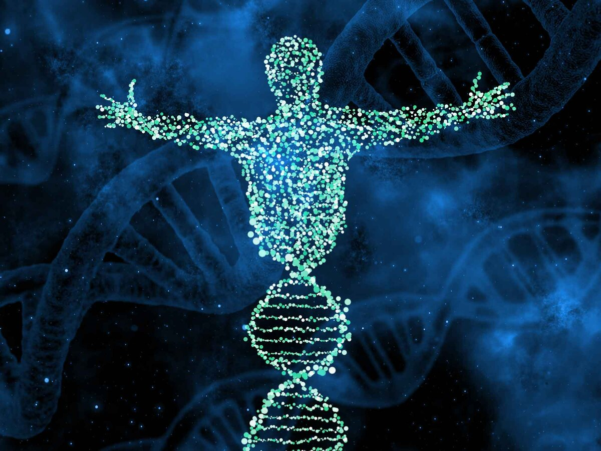

Молекулярная антропология — это наука, которая использует генетические методы и технологии для изучения происхождения, эволюции и распределения человеческих популяций. В последние годы молекулярные методы стали незаменимым инструментом для изучения истории нашего рода и его ближайших родственников. В 2023 году ожидается, что молекулярная антропология продолжит расширять свои границы и принесет множество открытий.
Одним из направлений исследований в молекулярной антропологии в 2023 году будет изучение генетического разнообразия населения Земли. С помощью современных генетических методов ученые смогут установить, какие генетические факторы влияют на здоровье и наследственные болезни в различных группах населения. Также будет исследоваться влияние социокультурных факторов на генетическое разнообразие и распределение генов в разных популяциях.
Другим направлением исследований станет изучение эволюции человеческого генома. Ученые попытаются выяснить, какие гены были изменены или приобретены в процессе эволюции, и как это отразилось на физических и ментальных характеристиках человека. Кроме того, исследования будут направлены на определение того, какие мутации генов приводят к заболеваниям, и как их можно лечить или предотвращать.
